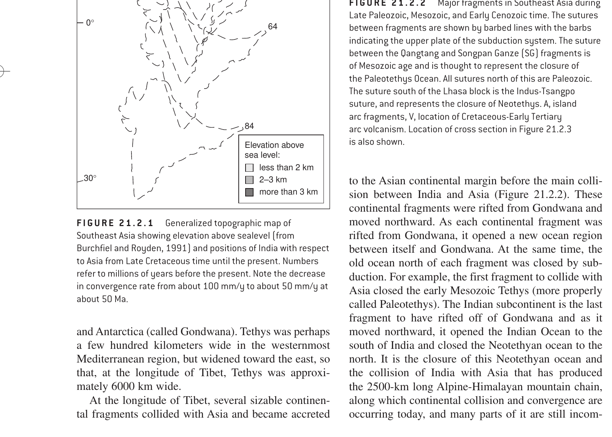

Constituents & Age: Following the initial rifting of Pangea during the Early Mesozoic (~180–150 Ma), the northern continental landmass was termed Laurasia. It comprised:
Laurasia existed as a coherent northern supercontinent until the Late Cretaceous (~90–60 Ma), when the opening of the North Atlantic Ocean and Norwegian Sea finally separated North America/Greenland from Eurasia.
Distinction from Laurasia: Laurentia refers strictly to the ancestral North American cratonic shield (North America, Greenland, and parts of NW Scotland). It does NOT include Europe or Asia! Laurasia = Laurentia + Eurasia.
Gondwanaland was the southern supercontinent comprising South America, Africa, Madagascar, India, Antarctica, and Australia. It was separated from northern Laurasia by the Tethys Seaway.
Superia is an ancient Neoarchean supercraton (~2.7–2.5 Ga) formed by the temporary assembly of the Superior, Hearne, Wyoming, and Karelian cratons. It predates the Mesozoic by over 2.3 billion years!
| Landmass | Constituent Landmasses | Geological Era / Age | Hemisphere / Location |
|---|---|---|---|
| Laurasia | N. America + Greenland + Europe + Asia (excl. India) | Mesozoic (200 Ma to ~90–65 Ma) | Northern Hemisphere |
| Laurentia | North America + Greenland (+ NW Scotland) | Paleoproterozoic to present (Ancient craton) | North American nucleus only |
| Gondwanaland | South America + Africa + India + Antarctica + Australia | Neoproterozoic to Mesozoic (~550 to 150 Ma) | Southern Hemisphere |
| Pangea | Laurasia + Gondwanaland (All global continents assembled) | Late Paleozoic to Early Mesozoic (~335 to 175 Ma) | Global supercontinent |
| Superia | Superior + Hearne + Wyoming + Karelian cratons | Neoarchean (~2.7 to 2.45 Ga) | Archean supercraton |